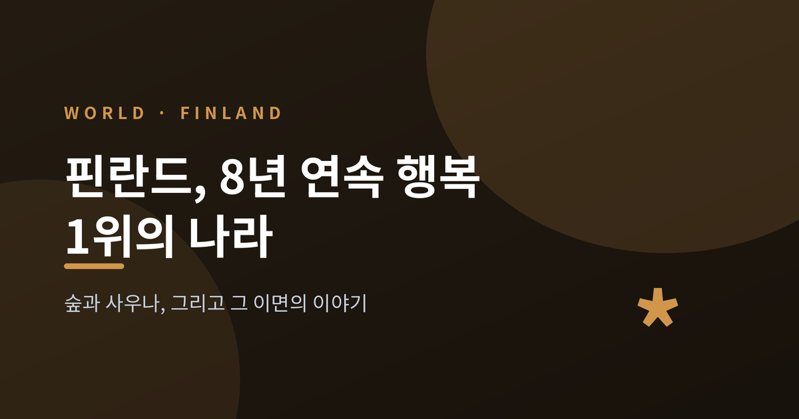
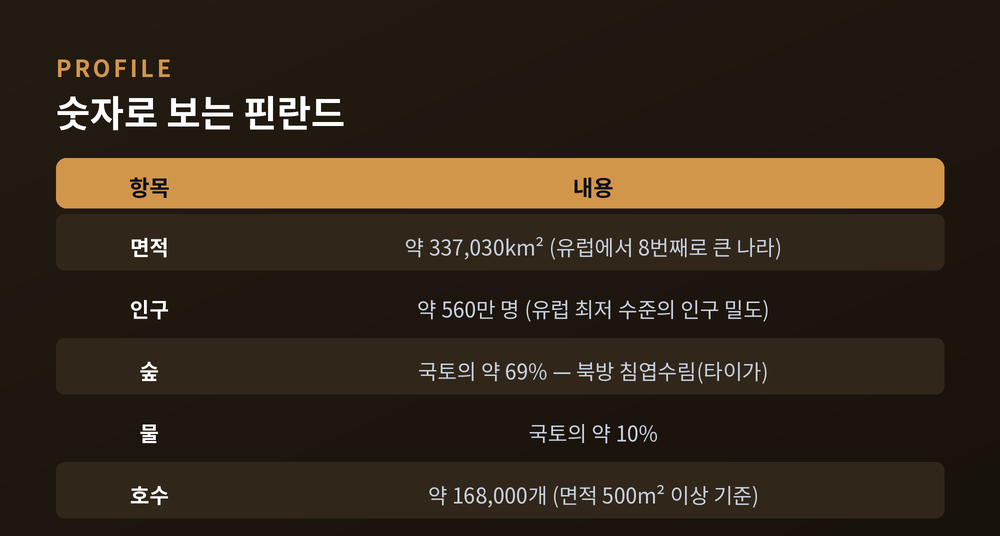
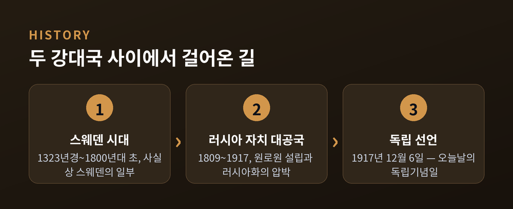
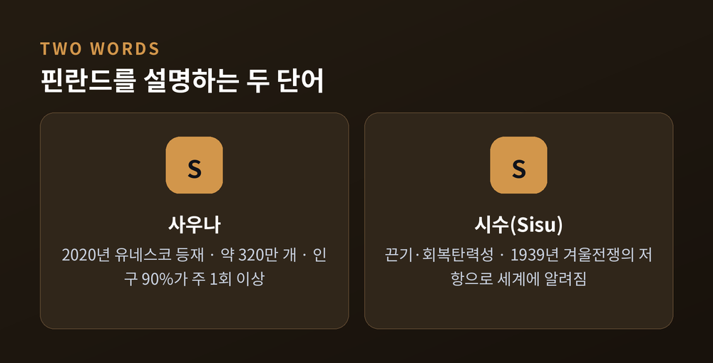

숲과 사우나, 그리고 그 이면의 이야기

이번 글에서는 핀란드라는 나라를 정리해 보겠습니다.
세계행복보고서에서 8년 연속 1위를 차지한 나라이지만, 그 1위에는 빛과 그늘이 함께 있습니다.
숲과 호수, 사우나와 시수, 그리고 길고 어두운 겨울까지 차분히 따라가 보겠습니다.
핀란드는 유럽에서 여덟 번째로 큰 나라입니다.
면적은 약 337,030km², 인구는 약 560만 명입니다.
인구 밀도는 유럽에서 가장 낮은 편에 속합니다.
이 나라를 한마디로 요약하면 숲과 물입니다.
국토의 약 69%가 숲으로 덮여 있습니다. 우점 식생은 북방 침엽수림, 곧 타이가입니다.
물의 비중도 만만치 않아, 국토의 약 10%가 물입니다.
흔히 "천 개의 호수의 나라"라 부르지만, 실제 숫자는 훨씬 큽니다.
면적 500m² 이상 호수만 약 168,000개입니다.
더 작은 연못까지 포함하면 187,000개를 넘습니다.
두 수치는 기준이 다른 별개의 통계입니다.

핀란드의 하늘은 계절에 따라 극단을 오갑니다.
겨울에는 극야가 찾아옵니다. 핀란드어로 카모스(Kaamos)라 부릅니다.
북극권 안쪽에서는 해가 하루 종일 지평선 위로 떠오르지 않습니다.
다만 위도에 따라 차이가 큽니다.
최북단 우츠요키에서는 극야가 약 50일 이어집니다.
북극권 부근 로바니에미에서는 완전한 극야가 사실상 이틀 정도에 그칩니다.
완전한 암흑은 아닙니다.
햇빛이 대기 상층에 닿아 일출과 일몰 같은 빛깔을 만듭니다.
정오 무렵엔 푸른 박명, 이른바 "블루 모먼트"가 깔립니다.
눈이 그 약한 빛을 반사해 고요하고 신비로운 분위기를 빚어냅니다.
여름은 정반대입니다.
해가 24시간 지지 않는 백야가 이어집니다.
우츠요키에서는 해가 지평선 아래로 내려가지 않는 기간이 70일을 넘습니다.
핀란드의 역사는 두 강대국 사이에서 빚어졌습니다.
1323년경부터 1800년대 초까지, 핀란드는 사실상 스웨덴의 일부였습니다.
이 시기에 채택한 법과 제도가 이후까지 영향을 남겼습니다.
1808년에서 1809년의 핀란드 전쟁에서 스웨덴이 패합니다.
이후 핀란드는 1809년부터 1917년까지 러시아 제국 내 자치 대공국으로 존재했습니다.
1809년 설립된 핀란드 원로원은 오늘날 정부와 대법원의 전신이 되었습니다.
19세기 말, 러시아는 자치권을 줄이려는 "러시아화" 정책을 폅니다.
그러나 이 압박은 오히려 민족 의식과 독립 열망에 불을 지폈습니다.
1917년 3월 러시아 차르가 퇴위하자 독립 작업이 본격화됩니다.
그해 12월 4일 원로원이 독립 선언서에 서명하고, 12월 6일 의회가 이를 채택했습니다.
지금도 핀란드의 독립기념일은 12월 6일입니다.

핀란드를 이야기할 때 사우나를 빼놓을 수 없습니다.
핀란드의 사우나 문화는 2020년 유네스코 인류무형문화유산으로 등재되었습니다.
핀란드 최초의 무형문화유산 등재 요소입니다.
규모가 놀랍습니다.
인구 약 560만 명의 나라에 사우나가 약 320만 개 있습니다.
인구의 약 90%가 일주일에 한 번 이상 사우나를 합니다.
사우나는 단순한 목욕이 아닙니다.
몸과 마음을 정화하고 내면의 평온을 찾는 행위로 여겨집니다.
그 핵심에는 달궈진 돌에 물을 부어 피어오르는 증기, 곧 "뢰일뤼(löyly)"가 있습니다.
또 하나의 단어는 시수(Sisu)입니다.
한 단어로 옮기기 어려운 말로, 끈기와 회복탄력성, 강인함에 가깝습니다.
성공 가능성이 낮은 역경 앞에서도 끝까지 밀고 나가는 태도를 가리킵니다.
1939년에서 1940년의 겨울전쟁 당시 소련의 침공에 맞선 저항으로 이 말이 널리 알려졌습니다.
다만 한 가지는 짚어 둡니다.
시수는 핀란드인이 즐겨 쓰는 문화적 개념이지, 모든 국민이 똑같다는 뜻은 아닙니다.

핀란드는 2025년판 세계행복보고서에서 8년 연속 세계 1위를 차지했습니다.
같은 해 덴마크가 2위, 아이슬란드가 3위, 스웨덴이 4위에 올랐습니다.
여기서 한 가지 오해를 풀어야 합니다.
이 순위는 갤럽 세계여론조사의 한 질문에 기반합니다.
"0에서 10까지, 당신은 지금 자신의 삶을 어디에 놓겠습니까."
즉 즐거움이나 기분의 측정이 아니라, 삶에 대한 주관적 만족도의 평가입니다.
보고서는 그 배경으로 보편적이고 질 높은 보건·교육·사회 지원 체계를 꼽습니다.
실제로 핀란드는 취학 전부터 고등교육까지 모든 단계가 무상입니다.
학생은 학업 지원금, 학자금 대출, 주거 지원을 받을 수 있습니다.
급식과 학교 보건, 교내 상담도 법으로 보장됩니다.
웰빙의 불평등이 낮다는 점, 그리고 사회적 신뢰도 자주 핵심 요인으로 거론됩니다.
그러나 빛만 있는 것은 아닙니다.
세계 1위라는 평가가 나오자 "행복의 역설"이라는 논쟁이 일었습니다.
1990년 통계에서 핀란드의 자살률은 헝가리에 이어 세계 2위 수준이었습니다.
이후 수십 년간 크게 줄어 지금은 미국과 비슷한 수준입니다만, 그늘이 사라진 것은 아닙니다.
길고 어두운 겨울은 계절성 우울을 부를 수 있습니다.
전문가의 진단은 신중합니다.
핀란드 보건복지연구소의 티모 파르토넨 교수는 문제를 기후 탓으로만 돌리는 것을 경계합니다.
"세계 어느 곳에 있든 우울하면 자살 위험은 비슷하다"는 것입니다.
그는 사회적 연결, 그리고 도움을 청하고 받아들이려는 의지를 가장 중요하게 봅니다.
예전에는 "자살이 많던 나라"로 불렸습니다. 지금은 "가장 행복한 나라"로 불립니다.
두 얼굴은 서로를 지우지 않고 나란히 존재합니다.
정리하면 이렇습니다.
핀란드의 행복 1위는 강한 복지와 신뢰, 평등이 쌓아 올린 결과입니다.
동시에 긴 겨울과 고독, 정신건강이라는 그늘도 함께 안고 있습니다.
결국 남는 메시지는 하나입니다.
"행복은 즐거움의 양이 아니라, 삶을 견디고 신뢰할 수 있다는 감각에 가깝다."
가장 행복한 나라가 어디냐고 물으신다면, 저는 숫자보다 그 이면을 함께 보시길 권하고 싶습니다.